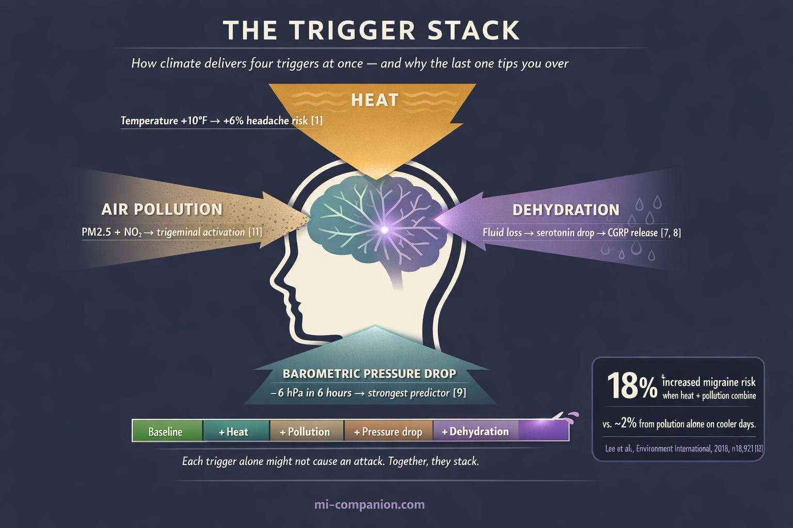
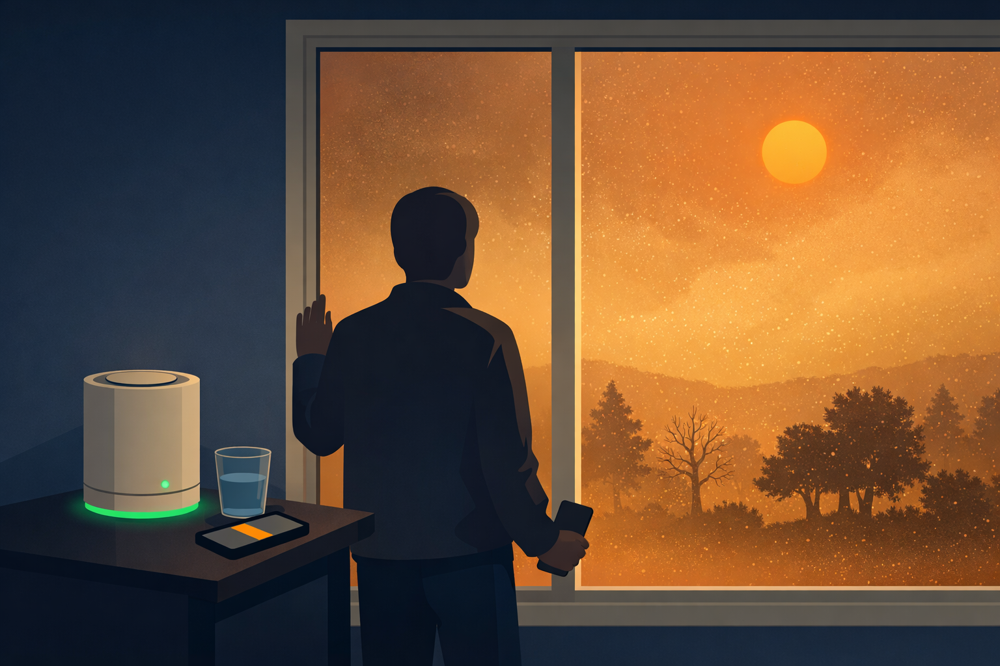
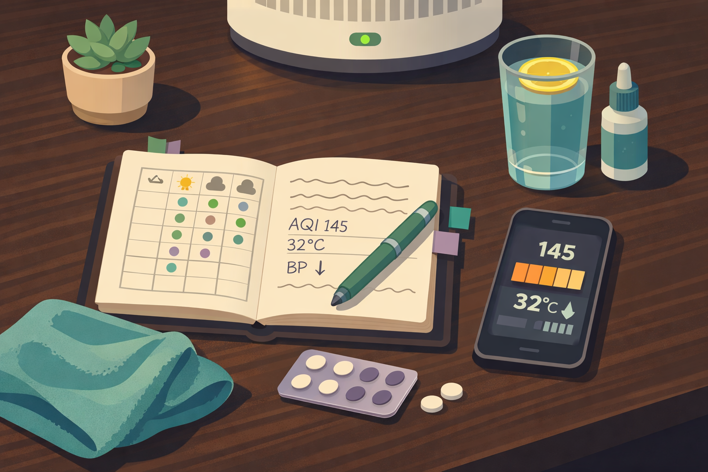

By Rustam Iuldashov
30 years lived experience with chronic migraine | Sources: 22 peer-reviewed references including Headache (n=407,792), The Lancet Neurology (332 studies reviewed), Environment International (n=18,921), Neurology (n=7,054) | Last updated: March 2026
Medical Review: This content is based on peer-reviewed research from Headache, The Lancet Neurology, Environment International, Neurology, The Journal of Headache and Pain, and Proceedings of the National Academy of Sciences.
Important Notice: This article is for informational purposes only and does not replace professional medical advice. The author is not a licensed physician or healthcare professional. Always consult your doctor before making changes to your treatment plan.
Key Takeaways
- Every 10°F increase in daily temperature is associated with a 6% increase in headache occurrence among migraine patients, based on over 71,000 headache diary entries[1]
- A 12-year UK Biobank study of 407,792 people found that nitrogen dioxide pollution, extreme temperatures, and temperature variability all independently increase the risk of developing migraine[4]
- Air pollution (PM2.5, NO₂, ozone) activates the same trigeminal pain pathways that drive migraine, and the effect is significantly amplified on hot days[11, 12]
- Wildfire smoke PM2.5 was linked to a 17% increase in headache-related emergency visits per 10 μg/m³ increase in 7-day concentration[13]
- Migraine-related disability nearly doubled between 2005 and 2018 even as prevalence remained stable — environmental factors are among several potential contributors[14]
- CGRP-blocking medications may eliminate the temperature-headache connection, offering a new tool for weather-sensitive migraine patients[1]
You know it before the forecast confirms it. The air thickens. Humidity presses against your temples like a slow hand. The weather app says 95°F. Your brain says something worse.
For the billion people worldwide living with migraine, climate change is not a policy debate. It’s a prediction of pain — written in temperature, barometric pressure, and the invisible chemistry of polluted air. And the science is finally catching up with what your body has been telling you for years.
The 6% Rule
In 2024, Vincent Martin and colleagues at the University of Cincinnati cross-referenced 71,030 daily headache diary entries from 660 migraine patients with weather stations across the United States.[1] The finding was blunt: for every 10°F increase in daily temperature, headache occurrence rose by 6%.[1]
Six percent sounds small. It isn’t. Climate models project average summer temperatures climbing 3–10°F over the coming decades, depending on where you live. Compound that with day after day of accumulating heat, and you have a slow-motion amplifier for a disease that already affects one in seven adults.
The biology is direct. Heat forces the body to shed warmth — blood vessels near the skin dilate, sweat glands fire, fluid and electrolytes drain. Dehydration follows. And dehydration lowers the migraine threshold: that invisible line between a normal day and an attack.[2] Your brain’s trigeminal nerve — the master alarm system for migraine pain — grows more reactive in the process.
How reactive? A Beth Israel Deaconess Medical Center study of over 7,000 emergency patients found that a 5°C rise in mean temperature within 24 hours raised the risk of a migraine-related ER visit by 7.5%.[3] Emergency rooms measure what epidemiologists count: more heat, more headache.
The temperature-headache link in numbers: +10°F daily temperature → +6% headache occurrence across 71,030 diary entries from 660 patients.[1] +5°C in 24-hour mean temperature → +7.5% migraine ER visits among 7,054 patients.[3]
400,000 People. Twelve Years. One Warning.
Temperature makes existing migraine worse. But what if it also creates new migraine patients?
A UK Biobank study published in 2025 tracked 407,792 people — none of whom had migraine at baseline — for a median of 11.8 years.[4] The researchers linked residential exposure to air pollution and temperature patterns with new migraine diagnoses. The numbers were stark.
Higher nitrogen dioxide (NO₂) exposure — the combustion byproduct you inhale near highways and industrial zones — raised migraine risk by 10% for every 10 μg/m³ increase.[4] Colder winters pushed risk up 46% per 5°C decrease.[4] And greater summer temperature variability — the wild day-to-day swings that define a destabilized climate — increased risk by 19% per 1°C of added fluctuation.[4]
Read that again. This wasn’t a study of people already suffering. It was a study of people who weren’t — until the environment tipped them over.
Not just more attacks — new patients. The UK Biobank data suggests the changing climate may be creating migraine in people who never had it. Higher NO₂ (+10%), extreme winter cold (+46%), and summer temperature variability (+19%) each independently increased the risk of developing migraine over 12 years.[4]

Your Brain’s Weather Station
Why does climate hit the migraine brain harder than the average brain? The answer lives in a network called the trigeminovascular system — the nerve fibers and blood vessels that generate migraine pain.[5]
Think of it as a home security system. In most brains, the alarm threshold is high. It takes a serious intrusion to set it off. In a migraine brain, the threshold is genetically lower. The alarm trips more easily. And climate delivers not one trigger but several — simultaneously.[6]
Heat drains fluids and disrupts serotonin, the neurotransmitter that helps regulate pain signaling.[7] When serotonin drops, the trigeminal system activates more easily, releasing calcitonin gene-related peptide — CGRP — the molecule now recognized as the central driver of migraine pain.[8]
Barometric pressure drops — common before storms and weather fronts — shift the pressure balance across sinus cavities and meningeal membranes, potentially triggering pain signals in sensitized nerves.[9] A Japanese study analyzing 336,951 headache events from 4,375 diary users found that a barometric drop within 6 hours was one of the strongest weather predictors of an attack.[9]
Air pollution adds the third strike. Fine particulate matter (PM2.5) and NO₂ don’t just damage lungs. They cross into the bloodstream, drive systemic inflammation, and activate the same trigeminal pathways that produce migraine.[10] A 2025 meta-analysis of 31 studies confirmed significant associations between migraine attacks and PM2.5, PM10, NO₂, carbon monoxide, and ozone.[11]
Here’s what makes climate change uniquely dangerous for the migraine brain: these triggers don’t add. They multiply. A Seoul study of 18,921 migraine ER visits found that the effect of particulate matter on migraine risk jumped dramatically on hot days — an 18% increase when pollution and heat collided, versus roughly 2% from pollution alone on cooler days.[12]
Heat plus pollution isn’t two problems. It’s an exponential one.
⚠️ When to Seek Emergency Help
Seek immediate medical attention if you experience a sudden, severe headache unlike anything you’ve felt before (“thunderclap headache”), a headache with fever, stiff neck, confusion, seizures, double vision, weakness, numbness, or difficulty speaking, or a headache after a head injury.
Heat-related headache with altered consciousness, hot dry skin, or body temperature above 103°F may indicate heat stroke — a medical emergency. Call your local emergency number immediately. Do not use this article to self-diagnose.
When the Air Burns
Wildfires are climate change’s most visible signal — and their smoke is migraine fuel.
A 2023 California study examining emergency visits from 2006 to 2020 found that wildfire-specific PM2.5 was associated with a 17% increase in odds of headache-related ER visits for every 10 μg/m³ rise in 7-day average concentration.[13] Wildfire smoke contains more pro-inflammatory and oxidative compounds than standard urban pollution, with smaller particle sizes that penetrate deeper into tissue.[13]
If you’ve woken up with an unexpected attack during wildfire season, your body wasn’t overreacting. It was responding to particulate matter engineered by combustion chemistry to inflame the exact neural pathways that generate migraine.

The Disability Paradox
Here’s the part that rarely makes headlines.
The prevalence of migraine in the United States has held steady at 12–15% for three decades.[14] The number of people with migraine hasn’t changed. But the suffering has.
Migraine-related disability nearly doubled between 2005 and 2018. The proportion of patients reporting moderate-to-severe disability on the Migraine Disability Assessment Scale leapt from 22% to 42.4%.[14] Same number of migraineurs. Twice the burden.
Something is making migraine more disabling without creating more of it. The reasons are likely multiple — shifts in survey methodology, reduced stigma around reporting disability, rising opioid use for migraine, and growing information-age stress all play a role.[14] But the study authors also flagged environmental risk factors — worsening air quality, rising temperatures, more frequent natural disasters — as potential amplifiers that could make migraine more disabling without changing who gets it.[14] The climate may not be giving you migraine. But it may be making your migraine worse.
Stable prevalence, rising burden: Migraine prevalence 12–15% across 30 years (stable). Moderate-to-severe disability: 22% in 2005 → 42.4% in 2018 (nearly doubled). Possible contributors include methodology changes, reduced stigma, opioid use, and environmental factors including climate change.[14]
The Lancet Warning
In 2024, The Lancet Neurology published a sweeping review of 332 studies spanning 1968 to 2023, examining climate change across 19 neurological conditions.[15] The conclusion was direct: climate change is likely to increase attack frequency in people who already have migraine and contribute to new cases in susceptible individuals.[15]
Temperature extremes — both hot and cold — to which populations are unaccustomed posed the broadest threat.[15] So did wide daily temperature fluctuations. Nighttime temperatures drew particular concern: heat-disrupted sleep is a potent migraine trigger on its own.[15]
Lead author Sanjay Sisodiya of University College London noted that conditions are worsening faster than the research can track them, and factors that weren’t severe enough to affect brain health in earlier studies may now be crossing critical thresholds.[15]
A New Trigger Category
Traditional trigger management assumes you can avoid the offender. Skip the aged cheese. Dim the lights. Keep a steady sleep schedule. But you can’t avoid the atmosphere.
This is where trigger stacking becomes the essential concept.[16] Climate-related factors rarely act alone. A hot day with high humidity, falling barometric pressure, and poor air quality is a four-trigger assault on a migraine brain. Each one nudges the threshold lower. The last one pushes you over.
Understanding the stack is the first step toward defending against it.
What You Can Do
Knowledge of the mechanism gives you tools.
Track Weather Alongside Your Attacks
Log not just symptoms but temperature, humidity, barometric pressure, and air quality index. After 2–3 months, patterns will surface that are unique to your brain.[16]
Monitor Air Quality Actively
On high-pollution or wildfire-smoke days, limit outdoor exposure. N95 masks reduce particle inhalation. HEPA-filter air purifiers can cut indoor PM2.5 substantially.[17]
Hydrate Before You’re Thirsty
On hot days, your dehydration threshold drops. By the time you feel thirst, your brain chemistry has already shifted.[18] Stay ahead of it.
Protect Sleep When Temperatures Rise
Nighttime heat above 70°F disrupts sleep architecture, and poor sleep is a top-three migraine trigger.[15] Keep the bedroom below 67°F. Blackout curtains and cooling sheets help.
Consider Preventive Medication for High-Risk Seasons
The Martin study revealed something remarkable: in patients treated with fremanezumab, a CGRP-blocking antibody, the temperature-headache association vanished entirely.[1] If your migraines track weather, this conversation with your neurologist could change your summers.
Build a Climate-Aware Treatment Plan
If summer heat, wildfire season, or storm fronts reliably increase your attacks, a preventive strategy timed to those periods can reduce your overall burden before the season hits.

The Bigger Picture
Climate change is rewriting the conditions under which the migraine brain operates. Rising temperatures, shifting weather patterns, deteriorating air quality, and more frequent extreme events are converging on the most common neurological disorder on the planet.
For 30 years, I’ve tracked my own migraines through seasons and cities, through heatwaves and stillness. What I knew from lived experience, science is now confirming with data measured in hundreds of thousands of lives. The climate is reshaping your migraine landscape.
The atmosphere has become a trigger. It’s time we started treating it like one.
⚕️ Important Medical Disclaimer
This article is for informational and educational purposes only and does not constitute medical advice, diagnosis, or treatment. The author, Rustam Iuldashov, is not a licensed physician, neurologist, or healthcare professional. He is a patient advocate with 30 years of personal experience living with chronic migraine.
All clinical claims in this article are sourced from peer-reviewed research published in indexed medical journals. Study designs and sample sizes are noted where applicable.
Always consult a qualified healthcare provider for questions about your individual health, migraine treatment, or medication decisions.
Climate-related triggers interact differently with each person’s physiology, and any changes to preventive medication, hydration strategies, or exposure management should be discussed with your doctor. This content was last reviewed for accuracy on March 2026.
References
- Martin VT, Cohen F, et al. “Temperature as a trigger for migraine: Association with fremanezumab treatment.” Presented at the American Headache Society 66th Annual Scientific Meeting (2024). Study design: Post-hoc analysis of RCT data. n=660.
- Buse DC. Referenced in: “What’s behind the mysterious rise of migraines?” National Geographic (2025). Expert commentary on threshold model of migraine triggers.
- Mukamal KJ, Wellenius GA, Suh HH, Mittleman MA. “Weather and air pollution as triggers of severe headaches.” Neurology, 72(10):922–927 (2009). doi:10.1212/01.wnl.0000344152.56020.94. Study design: Case-crossover. n=7,054.
- Ye S, Gao Y, Lin Y, Wang J, Wu IX, Xiao F. “Ambient nitrogen dioxide, temperature exposure, and migraine incidence: A large prospective cohort study.” Headache, 65(8):1318–1330 (2025). doi:10.1111/head.15037. Study design: Prospective cohort. n=407,792.
- Hargreaves RJ, Shepheard SL. “Pathophysiology of migraine — new insights.” Canadian Journal of Neurological Sciences, 26(Suppl 3):S12–S19 (1999). doi:10.1017/S0317167100000147. Study design: Review.
- Buse DC. Referenced in: “What’s behind the mysterious rise of migraines?” National Geographic (2025). Expert commentary on migraine threshold and trigger stacking.
- Deen M, Correnti E, Kamm K, et al. “Blocking CGRP in migraine patients — a review of pros and cons.” Journal of Headache and Pain, 18(1):96 (2017). doi:10.1186/s10194-017-0807-1. Study design: Narrative review.
- Durham PL. “Calcitonin gene-related peptide (CGRP) and migraine.” Headache, 46(Suppl 1):S3–S8 (2006). doi:10.1111/j.1526-4610.2006.00483.x. Study design: Mechanistic review.
- Katsuki M, Tatsumoto M, Kimoto K, et al. “Investigating the effects of weather on headache occurrence using a smartphone application and artificial intelligence.” Headache, 63(5):585–600 (2023). doi:10.1111/head.14482. Study design: Retrospective observational cross-sectional. n=4,375.
- Dhawan A. Referenced in: “What’s behind the mysterious rise of migraines?” National Geographic (2025). Expert commentary on neurovascular reactivity and air pollutants.
- Lu M, Zhang Z, et al. “Association between weather conditions and migraine: a systematic review and meta-analysis.” Journal of Headache and Pain (2025). doi:10.1186/s10194-025-01996-9. Study design: Systematic review and meta-analysis. n=31 studies.
- Lee H, Myung W, Cheong HK, et al. “Ambient air pollution exposure and risk of migraine: synergistic effect with high temperature.” Environment International, 121:383–391 (2018). doi:10.1016/j.envint.2018.09.022. Study design: Case-crossover. n=18,921.
- Elser H, Rowland ST, Marek MS, et al. “Wildfire smoke exposure and emergency department visits for headache: A case-crossover analysis in California, 2006–2020.” Headache, 63(1):94–103 (2023). doi:10.1111/head.14442. Study design: Case-crossover.
- Cohen F, Brooks CV, Sun D, Buse DC, Reed ML, Fanning KM, Lipton RB. “Prevalence and burden of migraine in the United States: A systematic review.” Headache, 64(5):516–532 (2024). doi:10.1111/head.14709. Study design: Systematic review. n=11 studies.
- Sisodiya SM, Gulcebi MI, Fortunato F, et al. “Climate change and disorders of the nervous system.” The Lancet Neurology, 23(6):636–648 (2024). doi:10.1016/S1474-4422(24)00087-5. Study design: Review of 332 studies.
- Cohen F. Referenced in: “What’s behind the mysterious rise of migraines?” National Geographic (2025). Expert commentary on trigger management strategies.
- Portt L, Goel N, Smith ML, Bhatt DL, Casey JA. “Migraine and air pollution: A systematic review.” Headache, 63(10):1313–1338 (2023). doi:10.1111/head.14632. Study design: Systematic review. n=22 studies.
- Yang AC, Fuh JL, Huang NE, Shia BC, Wang SJ. “Patients with migraine are right about their perception of temperature as a trigger: time series analysis of headache diary data.” The Journal of Headache and Pain, 16:34 (2015). doi:10.1186/s10194-015-0533-5. Study design: Prospective diary study. n=66.
- Li W, Bertisch SM, Engeda J, et al. “Weather, ambient air pollution, and risk of migraine headache onset among patients with migraine.” Environment International, 143:105949 (2020). doi:10.1016/j.envint.2020.105949. Study design: Prospective self-controlled case series. n=98.
- Szyszkowicz M, Kaplan GG, Grafstein E, Rowe BH. “Air pollution and daily ED visits for migraine and headache in Edmonton, Canada.” American Journal of Emergency Medicine, 27(4):391–396 (2009). doi:10.1016/j.ajem.2008.03.013. Study design: Ecological time-series. n=56,241 migraine ED visits.
- Casey JA, Kioumourtzoglou MA, Padula A, et al. “Air pollution, methane super-emitters, and oil and gas wells in Northern California: the relationship with migraine headache prevalence and exacerbation.” Environmental Health, 20:45 (2021). doi:10.1186/s12940-021-00727-w. Study design: Case-control. n=89,575 migraine cases.
- Louis S, Carlson AK, Suresh A, et al. “Impacts of climate change and air pollution on neurologic health, disease, and practice: a scoping review.” Neurology, 100(10):474–483 (2023). doi:10.1212/WNL.0000000000201630. Study design: Scoping review.

How We Create Content
- Peer-reviewed sources only. Headache, The Lancet Neurology, Environment International, Neurology, The Journal of Headache and Pain, Environmental Health, American Journal of Emergency Medicine, Canadian Journal of Neurological Sciences.
- Study transparency. Study design and sample sizes noted for all clinical references.
- Source verification. All claims backed by numbered references with DOI links.
- Experience + Science. 30 years personal migraine experience combined with peer-reviewed evidence.
- Regular updates. Articles reviewed when significant new research emerges.
- No conflicts of interest. No funding from pharmaceutical companies, air quality technology manufacturers, or environmental organizations.
Track the Climate Triggers You Can’t See
Log temperature, air quality, and barometric pressure alongside your migraine diary. Build the personal dataset that reveals which weather patterns set the stage for your attacks — and which defenses actually work.
Last reviewed: March 2026
Next scheduled review: September 2026